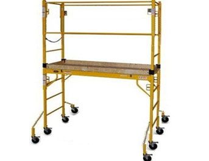

Mobile scaffolds are a type of supported scaffold set on wheels or casters. They are designed to be easily moved and are commonly used for things like painting and plastering, where workers must frequently change position.
- Scaffolds must be plumb, level, and squared.
-
To prevent collapse of the scaffold, to secure vertical members together laterally and to automatically square and align vertical members, scaffolds must be braced by
- Cross-braces
- Horizontal braces
- Diagonal braces
- Or a combination of braces
- All brace connections must be secured.
-
To prevent movement of the scaffold while it is being used in a stationary position,
scaffold casters and wheels must be locked with
- Positive wheel locks
- Wheel and swivel locks
- And/or equivalent means
-
Caster stems and wheel stems in scaffold legs or adjustment screws must be
- Pinned
- Or otherwise secured
-
Platforms must not extend beyond the base supports of the scaffold, unless stability is ensured by
- Outrigger frames
- Equivalent devices
-
Leveling of the scaffold, where necessary, must be achieved by the use of
- Screw jacks
- Equivalent means
- Scaffolds constructed of tube and coupler components must also comply with the requirements
of paragraph (b) of this section.
- Scaffolds constructed of fabricated frame components must also comply with the
requirements of paragraph (c) of this section.
- Scaffolds shall be stabilized to prevent tipping during movement.
- Manual force used to move the scaffold must be applied as close to the base as pra
cticable, but not more than 5 feet above the supporting surface.
- Power systems used to propel mobile scaffolds must be designed for that purpose.
Forklifts, trucks, motor vehicles, or add-on motors must not be used to propel scaffolds unless
the scaffold is designed for them.
-
Employees are not allowed to ride on scaffolds unless the following conditions exist
-
The surface on which the scaffold is being moved is
- Within 3 degrees of level.
- Free of pits, holes, and obstructions.
- The height to base width ratio of the scaffold during movement is 2:1 or less,
unless the scaffold is designed and constructed to meet or exceed nationally recogniz
ed stability test requirements (such as ANSI/SIA A92.5 and 92.6).
- Outrigger frames, when used, are installed on both sides of the scaffold.
-
When power systems are used, the propelling force is
- Applied directly to the wheels.
- Does not produce a speed in excess of 1 foot per second.
- No employee is on any part of the scaffold that extends beyond the wheels, casters, or other supports.
- Before a scaffold is moved, each employee on the scaffold must be made aware of the move.